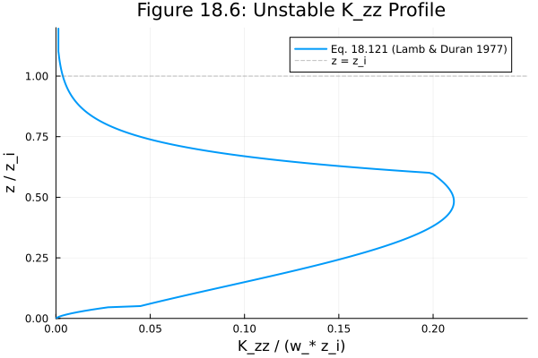
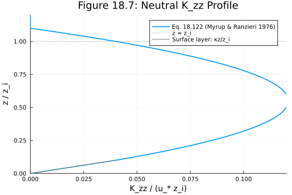
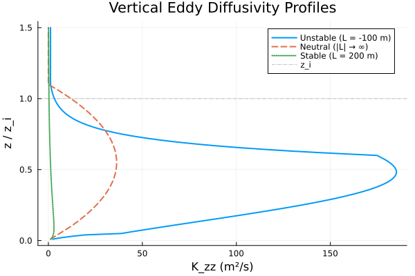
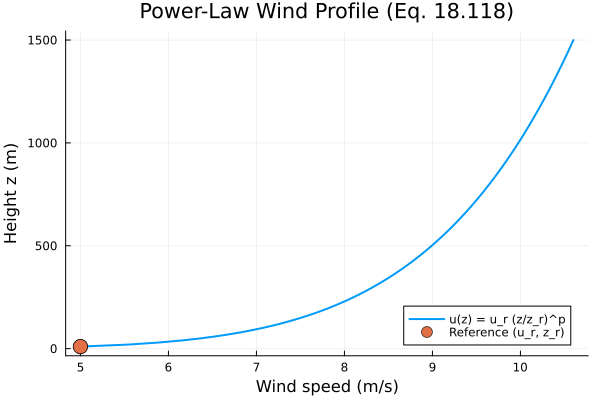
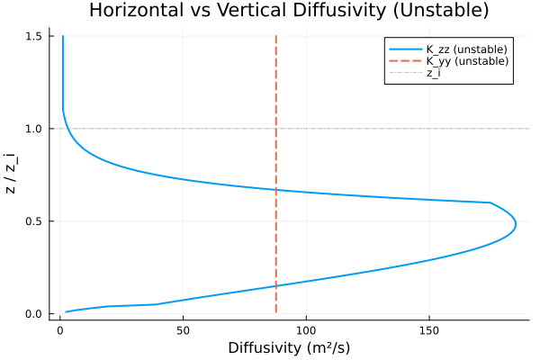

Atmospheric Diffusion Parameterizations
Overview
This module implements atmospheric eddy diffusivity and wind profile parameterizations from Chapter 18 of Seinfeld & Pandis (2006), Atmospheric Chemistry and Physics: From Air Pollution to Climate Change, 2nd Edition. These parameterizations describe the turbulent transport of trace species in the planetary boundary layer under different atmospheric stability conditions.
Reference: Seinfeld, J. H. and Pandis, S. N.: Atmospheric Chemistry and Physics: From Air Pollution to Climate Change, 2nd Edition, John Wiley & Sons, 2006, Chapter 18, Section 18.12.
AtmosphericDynamics.AtmosphericDiffusion — Function
AtmosphericDiffusion(; name) -> ModelingToolkit.System
Create a ModelingToolkit.System implementing the atmospheric diffusion parameterizations from Chapter 18 of Seinfeld & Pandis (2006), Atmospheric Chemistry and Physics, 2nd Edition.
This system provides:
- Wind speed profile: Power-law profile (Eq. 18.118)
- Vertical eddy diffusivity $K_{zz}$: Surface-layer similarity (Eq. 18.119–18.120), with full-depth profiles for unstable (Eq. 18.121, Lamb & Duran 1977), neutral (Eq. 18.122, Myrup & Ranzieri 1976), and stable (Eq. 18.125, Businger & Arya 1974) conditions.
- Horizontal eddy diffusivity $K_{yy}$: Unstable conditions (Eq. 18.128–18.129).
The stability regime is selected using the Monin–Obukhov length $L$: L < 0 for unstable, L > 0 for stable, and the limit |L| → ∞ for neutral conditions.
Reference
Seinfeld, J. H. and Pandis, S. N.: Atmospheric Chemistry and Physics: From Air Pollution to Climate Change, 2nd Edition, John Wiley & Sons, 2006, Chapter 18, Section 18.12.
Implementation
using AtmosphericDynamics
using ModelingToolkit
using ModelingToolkit: t
using DynamicQuantities
using DataFrames, SymbolicsState Variables
sys = AtmosphericDiffusion()
vars = unknowns(sys)
DataFrame(
:Name => [string(Symbolics.tosymbol(v, escape = false)) for v in vars],
:Units => [string(ModelingToolkit.get_unit(v)) for v in vars],
:Description => [ModelingToolkit.getdescription(v) for v in vars]
)| Row | Name | Units | Description |
|---|---|---|---|
| String | String | String | |
| 1 | u_wind | 1.0 m s⁻¹ | Mean wind speed at height z (Eq. 18.118) |
| 2 | z | 1.0 m | Height above ground |
| 3 | K_zz | 1.0 m² s⁻¹ | Vertical eddy diffusivity |
| 4 | K_yy | 1.0 m² s⁻¹ | Horizontal eddy diffusivity |
Parameters
params = parameters(sys)
DataFrame(
:Name => [string(Symbolics.tosymbol(p, escape = false)) for p in params],
:Units => [string(ModelingToolkit.get_unit(p)) for p in params],
:Description => [ModelingToolkit.getdescription(p) for p in params]
)| Row | Name | Units | Description |
|---|---|---|---|
| String | String | String | |
| 1 | z_i | 1.0 m | Mixed-layer (inversion) height |
| 2 | z_r | 1.0 m | Reference height for wind profile |
| 3 | L_MO | 1.0 m | Monin-Obukhov length |
| 4 | u_star | 1.0 m s⁻¹ | Friction velocity |
| 5 | u_r | 1.0 m s⁻¹ | Reference wind speed |
| 6 | κ | 1.0 | von Karman constant (dimensionless) |
| 7 | f_cor | 1.0 s⁻¹ | Coriolis parameter |
| 8 | Kzz_zero | 1.0 m² s⁻¹ | Zero diffusivity for above-BL fallback |
| 9 | p_wind | 1.0 | Power-law exponent for wind profile (dimensionless) |
Equations
equations(sys)\[ \begin{align} \mathtt{u\_wind}\left( t \right) &= \left( \frac{z\left( t \right)}{\mathtt{z\_r}} \right)^{\mathtt{p\_wind}} \mathtt{u\_r} \\ \mathtt{K\_zz}\left( t \right) &= ifelse\left( \left|\frac{\mathtt{L\_MO}}{\mathtt{z\_i}}\right| > 10, ifelse\left( \frac{z\left( t \right)}{\mathtt{z\_i}} < 0.1, \mathtt{u\_star} z\left( t \right) \kappa, ifelse\left( \frac{z\left( t \right)}{\mathtt{z\_i}} \leq 1.1, \mathtt{u\_star} \left( 1.1 + \frac{ - z\left( t \right)}{\mathtt{z\_i}} \right) z\left( t \right) \kappa, \mathtt{Kzz\_zero} \right) \right), ifelse\left( \frac{\mathtt{L\_MO}}{\mathtt{z\_i}} < 0, ifelse\left( \frac{z\left( t \right)}{\mathtt{z\_i}} < 0.05, 2.5 \left( \frac{z\left( t \right)}{\mathtt{z\_i}} \right)^{1.3333} \left( 1 + \frac{ - 15 z\left( t \right)}{\mathtt{L\_MO}} \right)^{0.25} \left( \frac{ - \mathtt{z\_i}}{\mathtt{L\_MO} \kappa} \right)^{0.33333} \mathtt{u\_star} \mathtt{z\_i} \kappa, ifelse\left( \frac{z\left( t \right)}{\mathtt{z\_i}} \leq 0.6, \left( \frac{ - \mathtt{z\_i}}{\mathtt{L\_MO} \kappa} \right)^{0.33333} \mathtt{u\_star} \mathtt{z\_i} \left( 0.021 + \frac{0.408 z\left( t \right)}{\mathtt{z\_i}} + 1.351 \left( \frac{z\left( t \right)}{\mathtt{z\_i}} \right)^{2} - 4.096 \left( \frac{z\left( t \right)}{\mathtt{z\_i}} \right)^{3} + 2.56 \left( \frac{z\left( t \right)}{\mathtt{z\_i}} \right)^{4} \right), ifelse\left( \frac{z\left( t \right)}{\mathtt{z\_i}} \leq 1.1, 0.2 \left( \frac{ - \mathtt{z\_i}}{\mathtt{L\_MO} \kappa} \right)^{0.33333} \mathtt{u\_star} \mathtt{z\_i} e^{6 + \frac{ - 10 z\left( t \right)}{\mathtt{z\_i}}}, 0.0013 \left( \frac{ - \mathtt{z\_i}}{\mathtt{L\_MO} \kappa} \right)^{0.33333} \mathtt{u\_star} \mathtt{z\_i} \right) \right) \right), \frac{\mathtt{u\_star} z\left( t \right) e^{\frac{ - 8 \mathtt{f\_cor} z\left( t \right)}{\mathtt{u\_star}}} \kappa}{0.74 + \frac{4.7 z\left( t \right)}{\mathtt{L\_MO}}} \right) \right) \\ \mathtt{K\_yy}\left( t \right) &= ifelse\left( \frac{\mathtt{L\_MO}}{\mathtt{z\_i}} < 0, 0.1 \left( \frac{ - \mathtt{z\_i}}{\mathtt{L\_MO} \kappa} \right)^{0.33333} \mathtt{u\_star} \mathtt{z\_i}, ifelse\left( \left|\frac{\mathtt{L\_MO}}{\mathtt{z\_i}}\right| > 10, ifelse\left( \frac{z\left( t \right)}{\mathtt{z\_i}} < 0.1, \mathtt{u\_star} z\left( t \right) \kappa, ifelse\left( \frac{z\left( t \right)}{\mathtt{z\_i}} \leq 1.1, \mathtt{u\_star} \left( 1.1 + \frac{ - z\left( t \right)}{\mathtt{z\_i}} \right) z\left( t \right) \kappa, \mathtt{Kzz\_zero} \right) \right), ifelse\left( \frac{\mathtt{L\_MO}}{\mathtt{z\_i}} < 0, ifelse\left( \frac{z\left( t \right)}{\mathtt{z\_i}} < 0.05, 2.5 \left( \frac{z\left( t \right)}{\mathtt{z\_i}} \right)^{1.3333} \left( 1 + \frac{ - 15 z\left( t \right)}{\mathtt{L\_MO}} \right)^{0.25} \left( \frac{ - \mathtt{z\_i}}{\mathtt{L\_MO} \kappa} \right)^{0.33333} \mathtt{u\_star} \mathtt{z\_i} \kappa, ifelse\left( \frac{z\left( t \right)}{\mathtt{z\_i}} \leq 0.6, \left( \frac{ - \mathtt{z\_i}}{\mathtt{L\_MO} \kappa} \right)^{0.33333} \mathtt{u\_star} \mathtt{z\_i} \left( 0.021 + \frac{0.408 z\left( t \right)}{\mathtt{z\_i}} + 1.351 \left( \frac{z\left( t \right)}{\mathtt{z\_i}} \right)^{2} - 4.096 \left( \frac{z\left( t \right)}{\mathtt{z\_i}} \right)^{3} + 2.56 \left( \frac{z\left( t \right)}{\mathtt{z\_i}} \right)^{4} \right), ifelse\left( \frac{z\left( t \right)}{\mathtt{z\_i}} \leq 1.1, 0.2 \left( \frac{ - \mathtt{z\_i}}{\mathtt{L\_MO} \kappa} \right)^{0.33333} \mathtt{u\_star} \mathtt{z\_i} e^{6 + \frac{ - 10 z\left( t \right)}{\mathtt{z\_i}}}, 0.0013 \left( \frac{ - \mathtt{z\_i}}{\mathtt{L\_MO} \kappa} \right)^{0.33333} \mathtt{u\_star} \mathtt{z\_i} \right) \right) \right), \frac{\mathtt{u\_star} z\left( t \right) e^{\frac{ - 8 \mathtt{f\_cor} z\left( t \right)}{\mathtt{u\_star}}} \kappa}{0.74 + \frac{4.7 z\left( t \right)}{\mathtt{L\_MO}}} \right) \right) \right) \end{align} \]
Table 18.5: Stability Classes and Temperature Stratification
Table 18.5 from Seinfeld & Pandis (2006) relates the Pasquill-Gifford atmospheric stability classes to temperature gradients. This provides guidance for selecting appropriate stability parameters when applying the diffusivity formulas.
| Stability Class | Description | Ambient Temperature Gradient ∂T/∂z (°C 100 m⁻¹) | Potential Temperature Gradient ∂θ/∂z (°C 100 m⁻¹) |
|---|---|---|---|
| A | Extremely unstable | < -1.9 | < -0.9 |
| B | Moderately unstable | -1.9 to -1.7 | -0.9 to -0.7 |
| C | Slightly unstable | -1.7 to -1.5 | -0.7 to -0.5 |
| D | Neutral | -1.5 to -0.5 | -0.5 to 0.5 |
| E | Slightly stable | -0.5 to 1.5 | 0.5 to 2.5 |
| F | Moderately stable | > 1.5 | > 2.5 |
Note: The potential temperature gradient is calculated assuming ∂θ/∂z = ∂T/∂z + Γ, where Γ is the adiabatic lapse rate (0.986 °C 100 m⁻¹).
Analysis
The following plots reproduce key figures from Chapter 18, Section 18.12 of Seinfeld & Pandis (2006), showing the vertical profiles of eddy diffusivity under different atmospheric stability conditions.
Figure 18.6: Normalized Unstable K_zz Profile
This plot reproduces Figure 18.6 from Seinfeld & Pandis (2006), showing the dimensionless vertical eddy diffusivity $K_{zz}/(w_* z_i)$ as a function of normalized height $z/z_i$ under unstable (convective) conditions. The profile is derived from the numerical turbulence model of Lamb & Duran (1977), as given in Eq. 18.121.
using SciMLBase
using Plots
sys_nns = ModelingToolkit.toggle_namespacing(sys, false)
ssys = mtkcompile(sys; inputs = [sys_nns.z])
prob = NonlinearProblem(ssys, Dict(ssys.z => 100.0))
# Parameters for normalization
κ = 0.4
u_star = 0.3
z_i = 1000.0
L_MO = -100.0
w_star = u_star * (-z_i / (κ * L_MO))^(1 / 3)
wzi = w_star * z_i # Normalization factor
# Height range (focus on z/z_i from 0 to 1.2)
z_vals = 1.0:5.0:1200.0
# Compute normalized K_zz under unstable conditions
Kzz_norm = Float64[]
for z in z_vals
sol = solve(remake(prob; p = Dict(ssys.z => z, ssys.L_MO => L_MO)))
push!(Kzz_norm, sol[ssys.K_zz] / wzi)
end
plot(Kzz_norm, z_vals ./ z_i,
label = "Eq. 18.121 (Lamb & Duran 1977)",
linewidth = 2,
xlabel = "K_zz / (w_* z_i)",
ylabel = "z / z_i",
title = "Figure 18.6: Unstable K_zz Profile",
xlims = (0, 0.25),
ylims = (0, 1.2),
legend = :topright,
size = (600, 400))
hline!([1.0], color = :gray, linestyle = :dash, label = "z = z_i", alpha = 0.5)
Figure 18.7: Neutral K_zz Profile
This plot shows the normalized vertical eddy diffusivity $K_{zz}/(u_* H)$ as a function of normalized height $z/H$ under neutral conditions, based on the Myrup & Ranzieri (1976) formulation (Eq. 18.122). In neutral conditions, the scale height $H = z_i$ (the mixed-layer depth). The profile shows linear growth with height near the surface, followed by a decrease toward the top of the boundary layer.
using SciMLBase
using Plots
# Recompile system for neutral conditions
sys_nns = ModelingToolkit.toggle_namespacing(sys, false)
ssys = mtkcompile(sys; inputs = [sys_nns.z])
prob = NonlinearProblem(ssys, Dict(ssys.z => 100.0))
# Parameters for neutral case
κ = 0.4
u_star = 0.3
z_i = 1000.0 # H = z_i for neutral conditions
L_MO_neutral = 1e6 # Large |L| for neutral
# Height range (z/z_i from 0 to 1.2)
z_vals_neutral = 1.0:5.0:1200.0
# Compute normalized K_zz under neutral conditions
# Normalization: K_zz / (u_* * H) where H = z_i
Kzz_norm_neutral = Float64[]
for z in z_vals_neutral
sol = solve(remake(prob; p = Dict(ssys.z => z, ssys.L_MO => L_MO_neutral)))
push!(Kzz_norm_neutral, sol[ssys.K_zz] / (u_star * z_i))
end
plot(Kzz_norm_neutral, z_vals_neutral ./ z_i,
label = "Eq. 18.122 (Myrup & Ranzieri 1976)",
linewidth = 2,
xlabel = "K_zz / (u_* z_i)",
ylabel = "z / z_i",
title = "Figure 18.7: Neutral K_zz Profile",
xlims = (0, 0.12),
ylims = (0, 1.2),
legend = :topright,
size = (600, 400))
hline!([1.0], color = :gray, linestyle = :dash, label = "z = z_i", alpha = 0.5)
# Add reference line for surface layer similarity: K_zz = κ u_* z
z_surface = 0.0:0.01:0.1
Kzz_surface = κ .* z_surface # κ * (z/z_i) normalized by u_* z_i
plot!(Kzz_surface, z_surface,
label = "Surface layer: κz/z_i",
linestyle = :dot,
linewidth = 1.5,
color = :gray)
Vertical Eddy Diffusivity Profiles
This plot shows the vertical eddy diffusivity $K_{zz}$ (in dimensional units) as a function of normalized height $z/z_i$ for unstable, neutral, and stable atmospheric conditions.
using SciMLBase
using Plots
sys_nns = ModelingToolkit.toggle_namespacing(sys, false)
ssys = mtkcompile(sys; inputs = [sys_nns.z])
prob = NonlinearProblem(ssys, Dict(ssys.z => 100.0))
# Height range
z_vals = 10.0:10.0:1500.0
z_i = 1000.0 # Default mixed-layer height
# --- Unstable (L_MO = -100 m) ---
Kzz_unstable = Float64[]
for z in z_vals
sol = solve(remake(prob; p = Dict(ssys.z => z, ssys.L_MO => -100.0)))
push!(Kzz_unstable, sol[ssys.K_zz])
end
# --- Neutral (L_MO = 1e6 m, effectively infinite) ---
Kzz_neutral = Float64[]
for z in z_vals
sol = solve(remake(prob; p = Dict(ssys.z => z, ssys.L_MO => 1e6)))
push!(Kzz_neutral, sol[ssys.K_zz])
end
# --- Stable (L_MO = 200 m) ---
Kzz_stable = Float64[]
for z in z_vals
sol = solve(remake(prob; p = Dict(ssys.z => z, ssys.L_MO => 200.0)))
push!(Kzz_stable, sol[ssys.K_zz])
end
plot(Kzz_unstable, z_vals ./ z_i,
label = "Unstable (L = -100 m)", linewidth = 2,
xlabel = "K_zz (m²/s)", ylabel = "z / z_i",
title = "Vertical Eddy Diffusivity Profiles",
legend = :topright, size = (600, 400))
plot!(Kzz_neutral, z_vals ./ z_i,
label = "Neutral (|L| → ∞)", linewidth = 2, linestyle = :dash)
plot!(Kzz_stable, z_vals ./ z_i,
label = "Stable (L = 200 m)", linewidth = 2, linestyle = :dot)
hline!([1.0], color = :gray, linestyle = :dashdot, label = "z_i", alpha = 0.5)
Wind Speed Profile
The power-law wind profile (Eq. 18.118) describes how mean wind speed increases with height above the surface.
u_wind_vals = Float64[]
for z in z_vals
sol = solve(remake(prob; p = Dict(ssys.z => z)))
push!(u_wind_vals, sol[ssys.u_wind])
end
plot(u_wind_vals, z_vals,
label = "u(z) = u_r (z/z_r)^p",
linewidth = 2,
xlabel = "Wind speed (m/s)", ylabel = "Height z (m)",
title = "Power-Law Wind Profile (Eq. 18.118)",
legend = :bottomright, size = (600, 400))
scatter!([5.0], [10.0], label = "Reference (u_r, z_r)", markersize = 8)
Horizontal vs Vertical Diffusivity
Under unstable conditions, the horizontal eddy diffusivity $K_{yy}$ is approximately constant with height (Eq. 18.128), while $K_{zz}$ varies significantly through the boundary layer depth.
Kyy_unstable = Float64[]
for z in z_vals
sol = solve(remake(prob; p = Dict(ssys.z => z, ssys.L_MO => -100.0)))
push!(Kyy_unstable, sol[ssys.K_yy])
end
plot(Kzz_unstable, z_vals ./ z_i,
label = "K_zz (unstable)", linewidth = 2,
xlabel = "Diffusivity (m²/s)", ylabel = "z / z_i",
title = "Horizontal vs Vertical Diffusivity (Unstable)",
legend = :topright, size = (600, 400))
plot!(Kyy_unstable, z_vals ./ z_i,
label = "K_yy (unstable)", linewidth = 2, linestyle = :dash)
hline!([1.0], color = :gray, linestyle = :dashdot, label = "z_i", alpha = 0.5)